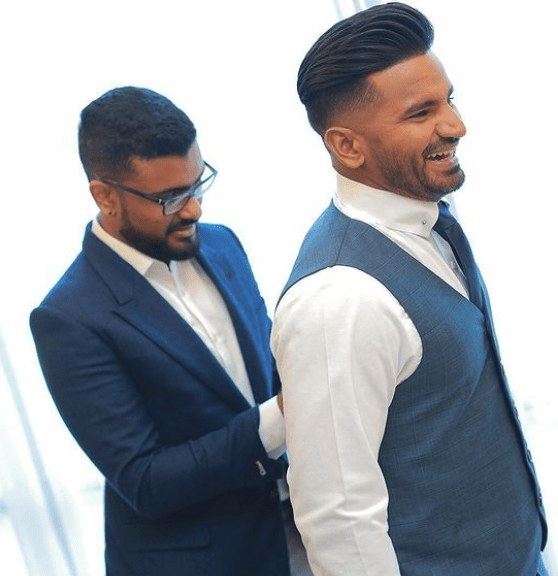
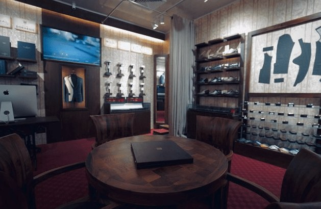

01 — Bespoke
Bespoke
A garment begun from nothing but you. Your own pattern is drafted from your measurements, the cloth is cut by hand and the jacket is built on a traditional canvas across a series of fittings.
Book a ConsultationPrivate fittings by appointment · One Galle Face & Colombo 07
Luxury Bespoke · Colombo
Bespoke and made-to-measure tailoring, drafted from your measurements and finished by hand.
The House
Suits, jackets, shirts and trousers cut to your individual measurements and built on traditional canvas construction — tailored in Colombo from cloth woven by the world’s great mills.
Our Process01 — Bespoke
A garment begun from nothing but you. Your own pattern is drafted from your measurements, the cloth is cut by hand and the jacket is built on a traditional canvas across a series of fittings.
Book a Consultation
02 — Made to Measure
Our house patterns, adjusted to your measurements and posture, with your choice of cloth, lining, lapel and finishing. The considered route to a suit that is unmistakably yours.
Book a FittingThe Process
We begin with how you live and what the garment is for: the occasion, the climate, the cloth and the silhouette.
Individual measurements and notes on posture are taken by hand, forming the basis of your pattern.
The cloth is cut and the garment built on a traditional canvas, shaping it to hold its line through years of wear.
Successive fittings refine balance, length and drape until the garment is entirely your own.
The Cloth
Choose from the collections of Europe’s most respected weavers.
Collections change through the year. Ask in the boutique for what is currently on the shelf.
The Wardrobe
Single- and double-breasted suits and dinner suits, for the boardroom, the wedding and everything between.
Blazers and sports jackets in cloths chosen for Colombo’s climate, structured or soft.
Collar, cuff and fit drafted to your measurements, to wear under a jacket or on their own.
Rise, break and finish to your preference, cut to partner a jacket or to stand alone.
Boutiques
Daily, 10:00 – 22:00
Get Directions
By Appointment
Reserve unhurried time with our tailors at either boutique. Bring a reference, an occasion or simply an idea — we will take it from there.